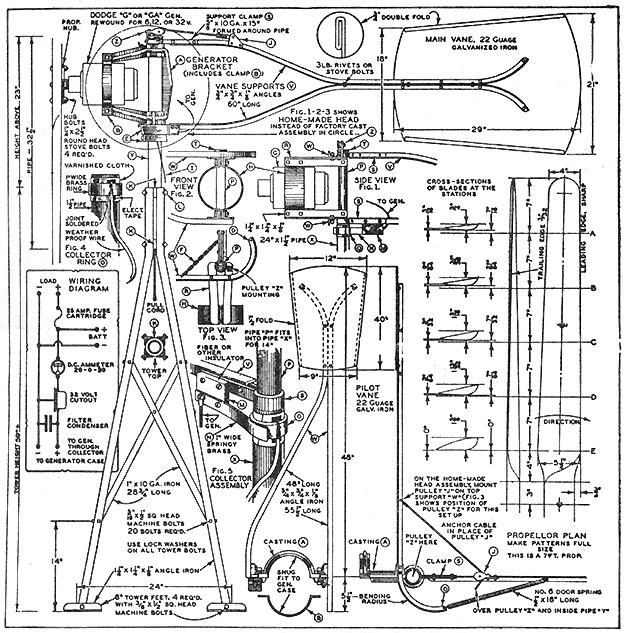

As you'll remember, we put out an appeal for a LEJAY manual in Issue 5. Well, no sooner had that number gone to press than we received the No. 5 issue of COUNTRYSIDE. And what to our wondering eyes should appear but the very address of the Lejay Mfg. Co. So we rushed off an order for a couple copies of their manual and hoped against hope that the current printing would be as good as the old 1930-something edition dad used to have.
And it darn near is (only the cover is changed, the contents seem the same) . . . perhaps because the "current" edition bears a 1945 copyright! When you've got a good thing . . .
Now please realize that many of the plans and illustrations here go back to the 20's or beyond. Some of the ideas are outdated, the prices quoted are from 1945 and LEJAY no longer handles the parts and kits anyway. On the other hand, this manual is stuffed brimful of the straight skinny on generating electricity at home . . . direct from the days when hundreds of thousands of rugged individualists did just that.
Wanna know how to build a 110 volt A.C. light plant from a Ford Model T generator or rewind a Dodge G or GA generator for home use or make an arc welder or an electric outboard motor or build your own drill press or construct an electric scooter or bicycle or set up an electric fence to keep the rabbits out of the garden? All this and more is in the LEJAY manual for only $1.50. If you're heading off into the bush somewhere, have a grudge against the electric company or just want to know how to set up a home generating plant, this is a darn good practical handbook of basic information. I know: I was raised with wind generators and welders right out of the pages of LEJAY.
And once you've got that basic information combined with today's technology (such as automobile alternators which are much better suited to home light plants than the old car generators ever were) . . . who knows just what you might come up with. As a matter of fact, we hope to have some interesting experiments of our own to report on one of these days. For now, though, the LEJAY handbook is a good place to start. We recommend it at $1.50 from: Lejay Mfg. Co., Belle Plains, Minnesota 56011.
Wind power can be harnessed to generate electricity for lights, radio and power.
The amount of power possible in your locality depends on the average yearly wind velocity.
Wind velocities vary in different sections of the country.
Average velocities for your location may be obtained from your State Weather Bureau.
Wind velocities are given daily by the Weather Bureau.
WIND POWER IS FREE.
The equipment for converting the Wind into usable electricity is your only cost.
Be certain that the plant you choose has a power output large enough to keep your batteries fully charged at all times. To determine the size of plant you need, get the average wind velocity for your location from your Weather Bureau. Then find a plant with a power rating sufficient to show a surplus of output over your needs within the time limit of the proven wind velocity shown by the observations of the Bureau.
Propellers used on wind plants are of the power type.
Propellers for direct drive are High Speed.
The speed of the propeller changes with the pitch of the blade.
The pitch of the propeller is the angle of the blade away from a position flat against the wind.
Proper propeller design increases the r.p.m. speed of the propeller to 3 or 4 times that of the wind velocity.
Propellers are liable to be damaged if allowed to run in rain, sleet, snow or sand storms. Therefore, all wind plants should be provided with a positive shut-off.
Centrifugal force increases with the speed in r.p.m. Gyroscopic action increases with the speed in r.p.m. In high winds, these actions may cause the propeller to fly apart, or cause the plant to run out of control, ruining the generator. Therefore, all wind plants should be provided with an efficient automatic governor.
Generators geared or belted to the propeller require 25% more power to operate.
Direct drive propellers in combination with specially wound slowspeed generators eliminate gears and belts. Therefore, power losses through friction are reduced to a minimum.
Wind velocity is more constant at higher altitudes.
Wind electric plants operate more efficiently at constant speeds. Therefore, wind plants should be mounted as high off the ground as is reasonably possible; at least high enough to clear all surrounding wind obstacles for a distance of at least 150 feet.
An electric lamp connected directly to a wind plant will burn out as the speed of the generator increases.
The amperage of the current generated by the wind plant increases with the speed of the generator, but the voltage remains constant. Therefore, the current generated by a wind plant must be run into a storage battery or batteries.
Lamps can be used direct from the plant if all lamps are turned on to the full capacity of the generator. They will, however, grow dim during lulls in the wind, and brighten with the increase in output due to a rise in the wind.
Voltage drop is loss of pressure due to resistance of the circuit or load.
Line loss is current that is used up in forcing the power through the connecting wires.
©1945, LeJay Mfg. Co. Reprinted by permission.
A Direct Drive 32 Volt Wind Plant-All Metal Construction
This plant has been designed for the Dodge "G" or "GA" generators because, being of the four pole type, these generators are readily adaptable to slow speeds.
The propeller plan gives the full dimensions for laying out actual size patterns and templates for a 7'-0" propeller which is the size recommended for this plant. Note that the leading edges of the two blades are parallel 5 1/2" apart, and the propeller carries a width of 5 1/2" for a distance of 7" on each side of the center. From this point the blade tapers to a tip width of 4" measured from the leadIng edge. Carefully maintain the 3/32" trailing edge for the whole length of the blade. Note the riser dimensions for positioning the cross-section heights and widths at the section lines "A, B, C, D, and E". All tapers from E to the tip are straight lines and should be laid out with a straight-edge. The best results may be had with redwood or straight grained fir,
The propeller hub is a washer of 4" diameter welded to the helical gear of the generator, or a cast iron hub selected from the LeJay catalog.
The collector assembly "E," and the generator bracket "A," which includes the clamp "B," may be purchased direct from LeJay factory, but may be home-made as illustrated in Figs. 1, 2 3 4 and 5.
The tower is four sided. The corner pieces are 60" long. The pipe "Y" is 32 1/2" long if used with the factory head assembly, but only 24" long if the head is to be home-made. The length of this pipe is the only necessary change in the tower construction to adapt it to either the factory head or the homemade head.
The pipe support collars "K" are of cold rolled steel, 2 3/4" in diameter by 1 1/2". A hole is bored in the center of each collar to provide a tight fit on pipe "Y," which is a piece of 1 1/2" standard pins. Drill 3/3" holes through tower legs and collars to pass the 3/8" x 1 1/2" square head machine bolts "L" which are threaded into the pipe "Y." The bolt holes are 3/4" down from the tops of the tower legs then the lower bolt holes are 8" below center of top holes.
The brass collector ring "O" is a tight fit to the pipe. Saw a slit in the ring, and by spreading the slit the ring is slipped over the several layers of varnished cloth and the bit of electricians' tape which lies under the slit. Insert the end of the weather-proof wire in this slit and flow solder over the joint. Clamp the ring while soldering to make it fit tightly. File the soldered joint smooth.
The lower half of assembly "E" is held in place by a 3/8" x 1" square head machine bolt which is screwed into pipe "Y." From 10 ga. band steel 3" wide, form the clamps "H " Figs. 1, 2 and 3. The angle irons "R" are 10" long, and have a alight bend, Fig. 3. Pipe "P" is threaded at the top, as is pipe "Y," to take a lock nut cut from a standard coupling. This nut holds the head in place.
The main vane has its lower support bolted to the top or brush half of the "E" assembly in the factory job, The top support is hung from the clamp "S. The main vane of the home-built plant has both supports hung from "S" clamps, Fig. 1. The "S" clamps are fitted to the pipe on which they are used.
The pilot vanes on both plants are identical.
The pull cord on the factory job is anchored to the top pilot vane support, passes through the pulley "J" on the top main vane support, through the pulley "Z" mounted on the "S" clamp of the top support of the main vane (by means of a small bracket), and then is drawn down inside pipe "Y."
The pull cord on the home-built plant is anchored to the main vane top support, passes through pulley "J" which is mounted on the top pilot vane support, through pulley "Z" which is mounted directly on the top generator rest "R" and then down through pipe "P".
On the factory casting of the head assembly stops are provided at the open and closed positions of the vanes. The home-built head uses a small chain "F," Fig. 3, to hold the vanes in the open position. A tension spring connected at point "D" on the top pilot vane support "W" holds the vanes at right angles when the pull cord is released. The cord is of 3/16" light stranded flexible cable.
The wiring diagram is clear. and needs no explanation. Much of the success of the plant depends, however, on the brush assembly described in Fig. 5. Adjust the wiper arm "N" to give a good strong contact trough the ring at any position and provide a strong flexible cable for the connection to the generator from the fastening bolt in the insulator block. This circuit is the positive shown is the diagram. The negative travels through the generator case to the tower and may be taken off tower at any handy point.
If you desire to run this plant with a governing propeller there will be no need of a pilot vane. Cut off upper pilot vane support "W" at a point 1" beyond where pullout cable fastens to support. This portion of upper support "W" will be used as arm for pulling plant in or out of wind. There will be no lower support "W".
PARTS
No. A-Cast iron generator bracket with clamp.
Factory machined .............................................................................................................................$4.95
No. E-Cast iron collector ring assembly. Inclu des a special machined brass wiper brush which is held firmly by means of tension spring, and insulated with fiber tube. This rush makes constant contact onto a machined brass ring which is pressed onto insulated lower casting. Wires are soldered to wiper and ring so quick connection to battery and generator can be made. Complete assembly, weather-proofed . .......................................$9.50
No. O-Brass collector ring to fit 1%" pipe-insulation material included .............................................$0.25
No. N-Spring brass wiper complete with bakelite M; drilled and (See catalog for price.)
No. 2M-Coil spring for go verning tension .......................................................................................$0.15
No. 2L-A" copper twist pullout cable. 10 feet for .53
©1945, LeJay Mfg. Co. Reprinted by permission.
|
 |
|
|